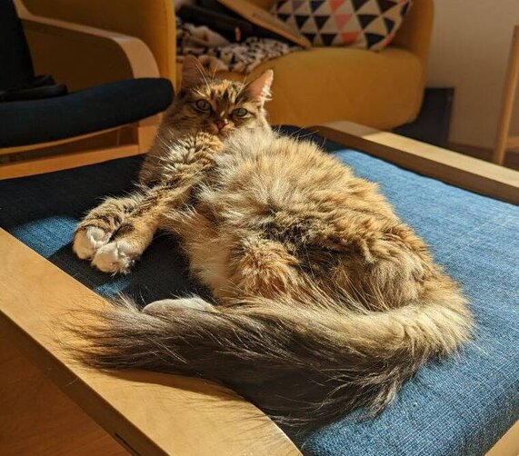

Story
The cat came into the family 9 years ago. I found her at the entrance of my house in December, coming home late at night. Without any hesitation, I took her in. I searched for her owners for a couple of weeks, and in the end, I was very happy that no owner was found.
She has been a full member of the family for 9 years now. I have changed cities three times in the last 5 years, and my pet has always been with me.
